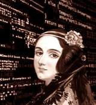
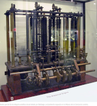

Uma mulher à frente do seu tempo.
Augusta Ada Byron, Condessa de Lovelace, atualmente conhecida como Ada Lovelace. Foi uma matemática, escritora e uma das responsáveis pelo computador que temos hoje. Hoje é reconhecida principalmente por ter escrito o primeiro algoritmo para ser processa por uma máquina, a máquina analítica de Charles Babbage.
Lovelace nasceu em 10 de Dezembro de 1815 é a filha legítima do poeta Lord Byron e sua esposa Anne Isabella, "Anabella Byron", Lady Wentworth. Na juventude, seus talentos matemáticos levaram-na a uma relação de trabalho e de amizade com o colega matemático britânico Charles Babbage e, em particular, o trabalho de Babbage sobre Máquina Analítica.
 The Ladies Diarye no
Memorial Científicode Taylor sob as iniciais "AAL".
Em 1953, mais de cem anos depois de sua morte, as notas de Lovelace sobre a máquina analítica de Babbage foram republicadas. A máquina foi reconhecida como um primeiro modelo de computador e as notas de Lovelace como a descrição de um computador e um software.
A linguagem de programação Ada foi criada em homenagem à Ada Lovelace pelo Departamento de Defesa dos Estados Unidos. A documentação da linguagem foi aprovada em 10 de Dezembro de 1980.
Para conhecer ainda mais sobre a incrível história de Ada Lovelace, acesse o artigo.